China Employee Termination in 2026: Pulse Route-Risk Matrix Brief for Foreign Employers
Key takeaways
- In China employee termination, the biggest avoidable losses come from choosing the wrong route for the evidence you actually have.
- Foreign employers should treat termination as a route-risk matrix decision, not a one-track legal event.
- Payroll and tax execution must be locked to the approved route before any employee-facing communication.
- City-level interpretation differences can materially change dispute exposure, even when the national legal baseline is the same.
- This brief is Pulse-style and impact-first; legal detail appears in the appendix.
What changed and why this matters now
The recurring pattern across multinational teams is not ignorance of China labor rules; it is overconfidence in a single route selected too early. Once that route is announced internally, operations often push forward even when new evidence weakens the legal foundation. The result is expensive rework: payout recalculation, message corrections, and preventable disputes.
This run rotates to a route-risk matrix format so non-China decision makers can compare options under uncertainty instead of forcing a false “go/no-go” binary. The practical goal is to reduce late-stage reversals and improve defensibility before communication leaves the company.
Plain-language legal context first
Under China’s labor framework, employer-initiated termination is not a generic management right; it is a legally conditioned action where route selection, evidence quality, and execution consistency all matter. For foreign clients, the operational implication is straightforward: you are not only proving a reason for termination, you are proving that your process matched that reason from start to finish.
That is why route selection and payroll execution cannot be separated. If the legal route is updated, severance assumptions, tax handling, communication scripts, and document packs may also need to change. Treating these as independent workstreams is a major risk amplifier.
Pulse route-risk matrix: how to decide under pressure
Route lens A: “High-assertion” route with thin evidence
Typical internal story: “The business urgency is clear, so we should move now.”
Risk profile: High legal challenge probability, high communication fragility, high management bandwidth drain.
When this route fails: Evidence chronology is incomplete; policy standards were not consistently documented; manager messaging overstates certainty.
Foreign-employer implication: This route is often selected by teams used to jurisdictions with broader at-will flexibility. In China contexts, that assumption can create significant cost escalation.
Route lens B: “Compensation-led” negotiated separation route
Typical internal story: “We can de-risk by paying more and closing quickly.”
Risk profile: Medium legal risk, medium-to-high cost risk, medium payroll/tax complexity.
When this route fails: Settlement terms are commercially agreed but payroll components, IIT assumptions, or release wording are not fully synchronized.
Foreign-employer implication: This route can be viable, but only if legal, payroll, and communication dependencies are locked before outreach.
Route lens C: “Evidence-mature” controlled route
Typical internal story: “We proceed after route proof, payroll lock, and script lock.”
Risk profile: Lower dispute risk, moderate cycle time, stronger post-case defensibility.
When this route fails: Teams skip city-level interpretation checks or rush closure archiving after payment.
Foreign-employer implication: This is generally the most stable route for international teams prioritizing predictable compliance outcomes over maximum speed.
Fast scoring grid for leadership meetings
Use a 5-factor score (1-5 each): evidence maturity, route clarity, payroll lock status, communication alignment, and local interpretation certainty. Any factor at 1-2 should trigger route review before notice planning. A total score under 16 is a practical “do not communicate yet” threshold.
This scoring method helps headquarters leaders who are not local-law specialists. It converts legal ambiguity into visible operational signals and supports faster alignment across HR, legal, payroll, and business management.
Why this matters for foreign employers
Foreign operators usually face two structural disadvantages in China termination cases: first, decision latency created by cross-border approvals; second, uneven familiarity with local evidence expectations. The route-risk matrix addresses both by defining what must be true before each workflow stage can proceed.
It also improves governance quality. Instead of debating only legal interpretation, teams can discuss measurable control status: Is the worksheet locked? Is the script version aligned? Is the city-level note complete? These are manageable questions with clear owners and deadlines.
Practical scenarios
Scenario A: The “speed request” from regional business lead
A regional leader asks for action within 24 hours due to team disruption concerns. HR has partial records, legal has unresolved interpretation points, and payroll has not finalized treatment assumptions.
Matrix outcome: Route lens A risk too high.
Recommended move: Shift to a controlled route sequence: evidence completion sprint, local interpretation confirmation, payroll lock, then communication. Report delay as a risk-control decision, not an administrative delay.
Scenario B: Settlement terms agreed, but tax detail unsettled
Commercially the employee accepts a package, but payroll and tax teams disagree on treatment assumptions for components and timing.
Matrix outcome: Route lens B viable only after payroll lock.
Recommended move: Freeze communication scripts, run a payroll-tax reconciliation checkpoint, and reissue one approved worksheet version with legal co-sign.
Scenario C: Route appears solid, closure quality is weak
Case executes smoothly, but closure files are fragmented across email threads, local folders, and different worksheet versions.
Matrix outcome: Route lens C at execution but weak at defensibility.
Recommended move: Apply archive lock before closure: indexed final pack, retrieval test, and post-case control review.
Daily operations SOP (role-owned)
HR case owner: opens case file, assigns initial route lens, builds chronology ledger, and tracks unresolved contradictions. HR owns the handoff discipline between legal, payroll, and manager communications.
Legal/compliance owner: validates route basis, documents interpretation risks, and approves route-switch triggers. Legal also defines “prohibited communication language” for manager scripts.
Payroll owner: builds controlled payout worksheet, validates data lineage, and records IIT/social-insurance handling assumptions. Payroll sets lock status and effective timestamp.
Manager owner: uses approved script only, avoids speculative statements, and escalates deviations in real time. Manager confirms script briefing completion before employee contact.
Vendor/EOR owner (if applicable): verifies process consistency with local operational practice, confirms document completeness, and supports closure archive standardization.
Document checklist with SLA cues
- Route package (target: within 48 hours of case opening): contract file, policy references, chronology log, evidence index, local interpretation note.
- Payroll package (target: before any outreach): payout worksheet vFinal, component rationale, IIT assumptions note, approval record, payment execution plan.
- Communication package (target: same day as payroll lock): final scripts, spokesperson assignment, escalation paths, meeting records template.
- Closure package (target: within 2 business days post-payment): payment proof, signed records, final memo, archive index, retrieval-test record.
Exception handling playbook
Missing or inconsistent evidence: pause route confirmation, run targeted evidence recovery, and issue leadership risk note with timeline impact.
Late route switch request: invalidate prior script and payroll assumptions, create delta memo, and re-lock affected dependencies before communication resumes.
Payroll worksheet version conflict: designate one source-of-truth owner, revoke superseded versions, and log the reason for every material change.
Manager off-script communication: trigger script incident protocol, produce corrected communication note, and attach to case file for defensibility.
System implementation notes
In HRIS/workflow tooling, add mandatory fields for route lens, route confidence score, local interpretation status, and route-switch trigger. In payroll systems, enforce worksheet versioning with immutable timestamps and role-based approval trails.
For communications governance, link script version IDs to case IDs and block scheduling actions if script or worksheet lock status is incomplete. In archive controls, require a retrieval test outcome flag before closure can be marked complete.
Common mistakes and prevention
- Mistake: deciding route before evidence maturity.
Prevention: route-confidence scoring and minimum evidence threshold.
- Mistake: treating settlement amount as universal risk cure.
Prevention: legal-payroll synchronization gate before outreach.
- Mistake: communicating while worksheet is still “in draft.”
Prevention: hard no-communication-until-lock control.
- Mistake: closing case without retrievability testing.
Prevention: archive lock and periodic closure audits.
What to do now
Start by classifying every active China termination case into one of the three route lenses. For each case, run the five-factor score and flag any factor below 3 for immediate remediation. Then introduce one non-negotiable control: no employee-facing communication until legal route, payroll worksheet, and script pack are all locked and versioned.
Next, install a weekly route-risk dashboard for leadership with four indicators: route changes after approval, payroll recalculation incidents, script deviation events, and closure retrieval failures. This gives non-specialist leaders a clear, repeatable view of whether the operating model is improving.
What to watch next
- Potential updates in local dispute-handling trends that affect evidence expectations.
- Shifts in payroll/tax implementation practice that could impact payout design.
- Internal velocity pressures that increase route-switch frequency and late-stage errors.
FAQ
1) Is one route always best for foreign employers?
No. The safer route depends on evidence maturity, payroll readiness, and local interpretation confidence.
2) Can we prioritize speed if business pressure is high?
Yes, but only with transparent risk acceptance. Speed without lock controls usually increases rework and dispute exposure.
3) Why focus so much on payroll before communication?
Because payout and tax inconsistencies after communication are hard to unwind and can damage credibility.
4) How often should route confidence be rescored?
At every material fact update and before each major case transition.
5) Does this framework replace legal advice?
No. It is an operations framework that improves decision quality; local legal advice remains essential.
6) What KPI proves the model is working?
Fewer late route switches and fewer post-communication payroll changes are strong early indicators.
Legal depth appendix (secondary)
This brief is anchored in the PRC Labor Contract Law framework and supported by practitioner and payroll implementation references commonly used by multinational employers. National legal principles are necessary but not sufficient for execution quality. Real outcomes remain sensitive to city-level adjudication practice, evidence consistency, and tax filing mechanics.
For high-impact or contested cases, employers should validate route structure, severance/tax treatment, and communication language with qualified local advisors before final execution.
Soft CTA
If your team needs a compliance-first operating model for China employee termination, China-Payroll.com can help design route-risk controls, payroll lock workflows, and defensible closure standards for foreign employers.
Disclaimer
This content is informational only and does not constitute legal, tax, or employment advice.
Sources
- National People’s Congress of China, Labor Contract Law of the PRC (English), accessed 2026-03-07: http://www.npc.gov.cn/zgrdw/englishnpc/Law/2007-12/13/content_1384064.htm
- ICLG, Employment & Labour Laws and Regulations: China, accessed 2026-03-07: https://iclg.com/practice-areas/employment-and-labour-laws-and-regulations/china
- Littler, Key Recent Developments in China’s Employment Law, accessed 2026-03-07: https://www.littler.com/news-analysis/asap/key-recent-developments-chinas-employment-law-china-us-comparative-perspective
- PwC Tax Summaries, China Individual — Taxes on Personal Income, accessed 2026-03-07: https://taxsummaries.pwc.com/peoples-republic-of-china/individual/taxes-on-personal-income
- China Briefing, China Human Resources and Payroll Guide, accessed 2026-03-07: https://www.china-briefing.com/doing-business-guide/china/human-resources-and-payroll
Need local employment support in China?
If you need a compliance-first partner for hiring, payroll, and risk controls in China, China-Payroll.com can help evaluate the right setup.
Image Prompt Pack
Create a 16:9 hero image for article title: 'China Employee Termination in 2026: Pulse Route-Risk Matrix Brief for Foreign Employers'. Scene: global operations team evaluating workforce model options for China market entry. Include motifs: decision matrix, org…